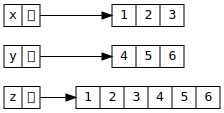
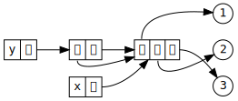

Programación imperativa (II)
Ricardo Pérez López
IES Doñana, curso 2025/2026
1 Mutabilidad
1.1 Estado de un dato
Ya hemos visto que en programación imperativa es posible cambiar el estado de una variable asignándole un nuevo valor (un nuevo dato).
Al hacerlo, no estamos cambiando el valor en sí, sino que estamos sustituyendo el valor de la variable por otro nuevo, mediante el uso de la asignación destructiva.
Sin embargo, también existen valores que poseen su propio estado interno y es posible cambiar dicho estado, no asignando un nuevo valor a la variable que lo contiene, sino modificando el interior de dicho valor.
Es decir: no estaríamos cambiando el estado de la variable (haciendo que ahora contenga un nuevo valor) sino el estado interno del propio valor al que hace referencia la variable.
Los valores que permiten cambiar su estado interno se denominan mutables.
1.2 Tipos mutables e inmutables
En Python existen tipos cuyos valores son inmutables y otros que son mutables.
Un valor inmutable es aquel cuyo estado interno NO puede cambiar durante la ejecución del programa.
Los tipos inmutables en Python son los números (
intyfloat), los booleanos (bool), las cadenas (str), las tuplas (tuple), los rangos (range) y los conjuntos congelados (frozenset).Un valor mutable es aquel cuyo estado interno puede cambiar durante la ejecución del programa sin cambiar su identidad.
Muchos valores mutables son colecciones de elementos (datos compuestos o contenedores) y cambiar su estado interno es cambiar su contenido, es decir, los elementos que contiene.
Los principales tipos mutables predefinidos en Python son las listas (
list), los conjuntos (set) y los diccionarios (dict).
1.2.1 Valores inmutables
- Un valor de un tipo inmutable no puede cambiar su estado interno durante la ejecución del programa.


- Lo que hace la asignación
x = 7no es cambiar el contenido del valor4, sino hacer que la variablexcontenga otro valor distinto (el valor4en sí mismo no se cambia internamente en ningún momento).
Las cadenas también son datos inmutables y, por tanto, con ellas ocurre exactamente igual.
Si tenemos:

y luego hacemos:
se crea una nueva cadena y se la asignamos a la variable
x.

- Es decir: la cadena
'hola'original no se cambia (no se le añade' manolo'detrás), sino que la nueva sustituye a la anterior en la variable:

Las tuplas también son datos inmutables, por lo que, una vez creadas, no se puede cambiar su contenido.
Por ejemplo, si tenemos una tupla
(1, 2, 3)y le concatenamos otra tupla(4, 5, 6), el resultado es una nueva tupla creada a partir de las otras dos (que permanecen inalteradas):

- Si ahora le asignamos otra tupla a
z, ésta pasa a apuntar a la nueva tupla, sin modificar a la anterior:
1.2.1.1 Secuencias
Las cadenas, las tuplas y los rangos son datos inmutables, así que no podemos modificarlos.
Pero también son datos compuestos de otros datos (sus elementos o componentes) a los que podemos acceder individualmente y con los que podemos operar, aunque no podamos cambiarlos, ya que están contenidos en datos compuestos inmutables.
De hecho, las cadenas, las tuplas y los rangos pertenecen a la familia de las secuencias, que son colecciones de elementos ordenados según la posición que ocupan dentro de la secuencia.
Por tanto, con las cadenas, las tuplas y los rangos podemos usar las operaciones comunes a cualquier secuencia de elementos.
La siguiente tabla recoge las operaciones comunes sobre secuencias, ordenadas por prioridad ascendente. \underline{s} y \underline{t} son secuencias del mismo tipo, \underline{n}, \underline{i}, \underline{j} y \underline{k} son enteros y \underline{x} es un dato cualquiera que cumple con las restricciones que impone \underline{s}.
| Operación | Resultado |
|---|---|
x\ in \ s |
True si algún
elemento de \underline{s} es igual a
\underline{x} |
x\ not in \ s |
False si algún
elemento de \underline{s} es igual a
\underline{x} |
s
+ t |
La concatenación de \underline{s} y \underline{t} (no va con rangos) |
s
* nn * s |
Equivale a concatenar \underline{s} consigo misma \underline{n} veces (no va con rangos) |
s[i] |
El \underline{i}-ésimo elemento de \underline{s}, empezando por 0 |
s[i:j] |
Rodaja de \underline{s} desde \underline{i} hasta \underline{j} |
s[i:j:k] |
Rodaja de \underline{s} desde \underline{i} hasta \underline{j} con paso \underline{k} |
len(s) |
Longitud de \underline{s} |
min(s) |
El elemento más pequeño de \underline{s} |
max(s) |
El elemento más grande de \underline{s} |
s.index(x [, i [, j ] ]) |
El índice de la primera aparición de \underline{x} en \underline{s} (desde el índice \underline{i} inclusive y antes del \underline{j}) |
s.count(x) |
Número total de apariciones de \underline{x} en \underline{s} |
- El operador de indexación consiste en acceder al elemento situado en la posición indicada entre corchetes:
Los índices positivos (del
0en adelante) empiezan a contar desde el comienzo de la secuencia (o sea, desde el primer elemento, el que está situado más a la izquierda).Los índices negativos (del
-1hacia atrás) empieza a contar desde el final de la secuencia (o sea, desde el último elemento, el que está situado más a la derecha).
- El slicing (hacer rodajas) es una operación que consiste en obtener una subsecuencia a partir de una secuencia, indicando los índices de los elementos inicial y final de la misma, así como un posible paso:
Es más fácil trabajar con las rodajas si suponemos que los índices se encuentran entre los elementos.
El elemento final nunca se alcanza.
Si el paso es negativo, la rodaja se hará al revés (de derecha a izquierda).
En la rodaja
s[i:j:k], los tres valores i, j y k son opcionales, así que se pueden omitir.Si se omite k, se entiende que es
1.Si se omite i, se entiende que queremos la rodaja desde el elemento más la izquierda de la secuencia (si k es positivo) o más a la derecha (si k es negativo).
Si se omite j, se entiende que queremos la rodaja hasta el elemento más a la derecha de la secuencia (si k es positivo) o más a la izquierda (si k es negativo).
Si el índice i está más a la izquierda que el índice j, k debería ser positivo (de lo contrario, devolvería la secuencia vacía).
Si el índice i está más a la derecha que el índice j, k debería ser negativo (de lo contrario, devolvería la secuencia vacía).
Si i = j, devuelve la secuencia vacía.
Casos particulares notables:
s[:n]es la rodaja desde el primer elemento deshasta la posición \underline{n}.s[n:]es la rodaja desde la posición \underline{n} hasta el final des.Siempre se cumple que
s==s[:n]+s[n:].s[n::-1]es la rodaja invertida desde la posición \underline{n} hasta el primer elemento des, con los elementos al revés.s[:]devuelve una copia des.s[::-1]devuelve una copia invertida des.
Ejercicio
Dada la siguiente tupla:
¿Qué valor devuelven las siguientes expresiones?
a[0:7:1]a[0:7:2]a[0:7]a[2:7:1]a[7:2:1]a[7:2:-1]a[:7:1]a[5::1]a[:-5:-1]a[-5::-1]a[5:-1:1]a[-1:5:-1]
1.2.2 Valores mutables: listas
Los valores de tipos mutables, en cambio, pueden cambiar su estado interno durante la ejecución del programa sin cambiar su identidad.
El tipo mutable más frecuente es la lista (
list).Una lista es como una tupla pero que puede cambiar sus elementos, aumentar o disminuir de tamaño.
Eso significa que una lista puede cambiar su contenido y, por tanto, su estado interno.
Los literales de tipo
listse crean separando sus elementos con comas y encerrándolos entre corchetes[y]:
También se pueden crear listas a partir de otros datos estructurados (cadenas, tuplas, rangos, etcétera) usando la función
list:No se puede crear una lista con
lista partir de un dato no estructurado:Para ello, lo mejor sería encerrar directamente el valor entre corchetes:
Las listas son secuencias mutables y, como tales, se pueden modificar usando ciertas operaciones:
Los operadores de indexación y slicing combinados con
=ydel:+-----+-----+-----+-----+-----+-----+ l | 124 | 333 | 'a' | 3.2 | 9 | 53 | +-----+-----+-----+-----+-----+-----+ 0 1 2 3 4 5 6 -6 -5 -4 -3 -2 -1Métodos como
append,clear,insert,remove,reverseosort.
Al cambiar el estado interno de una lista no se crea una nueva lista, sino que se modifica la ya existente:
x[1]![La lista después de cambiar x[1]](images/cambio-estado-lista-despues.svg)
x[1]Las siguientes tablas muestran todas las operaciones que nos permiten modificar listas.
En ellas, \underline{s} y \underline{t} son listas, y \underline{x} es un valor cualquiera.
| Operación | Resultado |
|---|---|
s[i] = x |
El elemento i-ésimo de \underline{s} se sustituye por \underline{x} |
s[i:j] = t |
La rodaja de \underline{s} desde \underline{i} hasta \underline{j} se sustituye por \underline{t} |
s[i:j:k] = t |
Los elementos de s[i:j:k] se sustituyen por \underline{t} |
del \ s[i:j] |
Elimina los elementos de s[i:j]Equivale a hacer s [i:j] =
[] |
del \ s[i:j:k] |
Elimina los elementos de s[i:j:k] |
| Operación | Resultado |
|---|---|
s.append(x) |
Añade \underline{x} al final de \underline{s}; es igual que s [len(s):len(s)] =
[x] |
s.clear() |
Elimina todos los elementos de \underline{s}; es igual quedel \ s[:] |
s.copy() |
Crea una copia superficial de
\underline{s}; es igual que s[:] |
s.extend(t)s += t |
Extiende \underline{s} con el contenido de \underline{t}; es igual que s [len(s):len(s)] = t |
s
*= n |
Modifica \underline{s} repitiendo su contenido \underline{n} veces |
s.insert(i, x) |
Inserta \underline{x} en \underline{s} en el índice \underline{i}; es igual que s[i:i] =
[x] |
s.pop([ i ]) |
Extrae el elemento \underline{i} de \underline{s} y lo devuelve (por defecto, i vale -1) |
s.remove(x) |
Quita el primer elemento de \underline{s} que sea igual a \underline{x} |
s.reverse() |
Invierte los elementos de \underline{s} |
s.sort() |
Ordena los elementos de \underline{s} |
Partiendo de x = [8, 10, 7, 9]:
| Ejemplo | Valor de x después |
|---|---|
x.append(14) |
[8, 10, 7, 9, 14] |
x.clear() |
[] |
x += [4, 5] |
[8, 10, 7, 9, 4, 5] |
x *= 2 |
[8, 10, 7, 9, 8, 10, 7, 9]
|
x.insert(3, 66) |
[8, 10, 7, 66, 9] |
x.pop() |
[8, 10, 7] |
x.remove(7) |
[8, 10, 9] |
x.reverse() |
[9, 7, 10, 8] |
x.sort() |
[7, 8, 9, 10] |
Es importante tener en cuenta que, si \underline{s} es una lista (o cualquier otro objeto mutable) no es lo mismo hacer:
que hacer:
En el primer caso, estamos extendiendo la lista \underline{s} y, por tanto, la estamos mutando. Es decir, estamos cambiando internamente la lista sin cambiar su identidad ni crear una lista nueva.
En el segundo caso, no estamos mutando la lista \underline{s}, sino que estamos creando una lista nueva a partir de la concatenación de las dos listas originales, y luego hacemos que \underline{s} apunte a la nueva lista, perdiéndose la referencia a la lista \underline{s} original. Por tanto, la identidad del objeto almacenado en \underline{s} sí ha cambiado.
Lo mismo se puede decir de
s *= ncon respecto as = s * n.
1.3 Alias de variables y valores mutables
Ya vimos que cuando una variable que tiene un valor se asigna a otra, ambas variables pasan a compartir el mismo valor, produciéndose el fenómeno conocido como alias de variables:
Esto se debe a que las variables almacenan referencias a los valores, no los valores en sí mismos (éstos se almacenan en el montículo).
No es lo mismo cambiar el valor que cambiar el contenido del valor.
Cambiar el contenido es algo que sólo se puede hacer si el valor es mutable (por ejemplo, cambiando un elemento de una lista):
- Cambiar el valor es algo que siempre se puede hacer (da igual la mutabilidad) simplemente asignando a la variable un nuevo valor:
Cuando los valores son inmutables, no importa si se comparten o no, ya que no se pueden modificar.
De hecho, el intérprete a veces crea valores inmutables nuevos y otras veces comparte los valores inmutables ya existentes.
Por ejemplo, el intérprete de Python crea internamente todos los números enteros comprendidos entre -5 y 256, por lo que todas las variables de nuestro programa que contengan el mismo número dentro de ese intervalo compartirán el mismo valor (serán alias):


- También crea valores compartidos cuando contienen exactamente las mismas cadenas.

El intérprete aprovecharía la cadena ya creada (buscándola primero en el montículo) y no crearía una nueva, para ahorrar memoria.
Por tanto, ambas variables contendrían la misma referencia a la misma cadena (o dicho, como también suele decirse, las dos variables serían dos referencias a la misma cadena).
También se comparten valores si se usa el mismo dato varias veces, aunque sea un dato mutable.
De nuevo, esto se debe a que en todo caso estamos accediendo al dato mutable a través de la misma referencia.
Por ejemplo, si hacemos:
se compartiría la lista
x, por lo que nos quedaría:

1.4 Identidad
Se denomina identidad del valor a un número entero que va asociado siempre a ese valor, el cual es único y constante durante toda la existencia del valor.
Ese número identifica al valor de entre todos los valores almacenados en el montículo, y lo distingue de entre todos los demás valores, ya sean iguales o distintos a él.
Dos valores distintos deben tener identidades distintas.
En cambio, dos valores iguales pueden o no tener la misma identidad.
En caso de que dos valores tengan la misma identidad, querrá decir que esos dos valores son idénticos, es decir, que son realmente el mismo valor almacenado en una única zona del montículo y al que se está accediendo a través de la misma referencia.
Dicho de otra forma: NO serían dos valores almacenados en dos zonas distintas del montículo y accesibles a través de dos referencias distintas.
La identidad de un valor nunca cambia durante la ejecución del programa o durante la misma sesión con el intérprete interactivo, incluso aunque el dato sea mutable y cambie su contenido.
En cambio, la identidad del valor sí que puede cambiar (y lo normal es que cambie) entre dos ejecuciones distintas del mismo programa, o entre dos sesiones distintas con el intérprete interactivo.
En Python, la identidad de un valor se consulta usando la función
id:
Si hacemos:
puede parecer que la identidad del valor
'prueba'ha cambiado, ya que hemos consultado dos veces su identidad usando la funciónidy en cada caso nos ha devuelto resultados diferentes.Sin embargo, lo que ocurre es que esos dos
'prueba'no son el mismo valor, sino dos valores iguales que se han creado en momentos diferentes y que ocupan zonas diferentes en la memoria, por lo que tienen identidades diferentes (aunque sus valores sean iguales).En cambio, si hacemos:
se obtiene el mismo resultado, ya que sólo hay un único valor
'prueba'en la memoria y, por tanto, la identidad es la misma en ambos casos.
Los conceptos de identidad y de referencia están relacionados.
Para comprobar si dos valores son idénticos (es decir, si son realmente el mismo valor) podríamos hacer una de estas dos comprobaciones:
Comprobar si tienen la misma identidad.
Comprobar si se usan las mismas referencias para acceder a ellos (es decir, si apuntan al mismo lugar en el montículo).
Así que, para saber si dos datos son idénticos (es decir, si ambos contienen el mismo valor, no simplemente dos valores iguales), podríamos intentar comparar sus referencias y ver su coinciden.
Pero el lenguaje Python no nos permite comparar directamente dos referencias, ya que, cuando hacemos:
en realidad estamos preguntando si son iguales sus valores, no sus referencias.
Por tanto, para saber si dos datos son idénticos, debemos usar otro mecanismo que no sea el de comparar referencias.
Una forma de saber si dos valores son el mismo valor (es decir, si son idénticos), es usar la función
id.Sabemos que la función
idaplicada a un valor devuelve la identidad del valor, que es un número único para cada valor.Por esa razón, si dos variables tienen el mismo
id, significa que ambas apuntan al mismo valor en la memoria y que, por tanto, son referencias al mismo valor.En general, si dos datos tienen el mismo
id, decimos que son idénticos, porque en realidad son el mismo dato.
1.4.1
is
Otra forma más directa de comprobar si dos datos son realmente el mismo dato en memoria (es decir, si son idénticos) es usar el operador
is, que comprueba si los dos datos tienen la misma identidad:Su sintaxis es:
⟨is⟩ ::= ⟨valor1⟩is⟨valor2⟩Es un operador relacional que devuelve
Truesi ⟨valor1⟩ y ⟨valor2⟩ tienen la misma identidad (es decir, si son el mismo dato en memoria y, por tanto, son idénticos) yFalseen caso contrario.En la práctica, equivale a hacer
id(⟨valor1⟩)==id(⟨valor2⟩).
Lo normal es usar el
iscon variables y, en tal caso, devuelveTruesi los datos que almacenan las variables son realmente el mismo dato.No es correcto usarlo con literales inmutables (y el intérprete lo avisa con un
SyntaxWarning), ya que, en tal caso, devuelve siempreTrue.En cambio, con literales mutables (como
[]) devuelve siempreFalse.También existe el operador
is not, que es el contrario alisy cuya sintaxis es:⟨is_not⟩ ::= ⟨valor1⟩isnot⟨valor2⟩El operador
is notes un operador relacional que, aplicado a dos valores, devolveráTruesi los valores no son idénticos.
2 Cambios de estado ocultos
2.1 Funciones puras
Las funciones puras son aquellas que cumplen que:
su valor de retorno depende únicamente del valor de sus argumentos, y
calculan su valor de retorno sin provocar cambios de estado observables en el exterior de la función.
Una llamada a una función pura se puede sustituir libremente por su valor de retorno sin afectar al resto del programa (es lo que se conoce como transparencia referencial).
Las funciones puras son las únicas que existen en programación funcional.
2.2 Funciones impuras
Por contraste, una función se considera impura:
si su valor de retorno depende de algo más que de sus argumentos, o
si provoca cambios de estado observables en el exterior de la función.
En éste último caso decimos que la función provoca efectos laterales.
Toda función que provoca efectos laterales es impura, pero no todas las funciones impuras provocan efectos laterales (puede ser impura porque su comportamiento se vea afectado por los efectos laterales provocados por otras partes del programa).
2.3 Efectos laterales
Un efecto lateral (side effect) es cualquier cambio de estado provocado por una parte del programa (por ejemplo, una función) que puede observarse desde otras partes del mismo, las cuales podrían verse afectadas por ese efecto de una manera poco evidente o impredecible.
Una función puede provocar efectos laterales, o bien verse afectada por efectos laterales provocados por otras partes del programa.
En cualquiera de estos casos, tendríamos una función impura.
Los casos típicos de efectos laterales en una función son:
Cambiar el valor de una variable global.
Cambiar el estado de un argumento mutable.
Realizar una operación de entrada/salida.
En un lenguaje imperativo se pierde la transparencia referencial, ya que ahora el valor de una función puede depender no sólo de los valores de sus argumentos, sino también además de los valores de las variables libres que ahora pueden cambiar durante la ejecución del programa:
Por tanto, cambiar el valor de una variable global (en cualquier parte del programa) es considerado un efecto lateral, ya que puede alterar el comportamiento de otras partes del programa de formas a menudo impredecibles o poco evidentes.
Cuando el efecto lateral lo produce la propia función también estamos perdiendo transparencia referencial, pues en tal caso no podemos sustituir libremente la llamada a la función por su valor de retorno, ya que ahora la función hace algo más que calcular dicho valor, y ese algo es un efecto observable fuera de la función.
Por ejemplo, una función que imprime por la pantalla o escribe en un archivo del disco está provocando un efecto observable fuera de la función, por lo que tampoco es una función pura y, por tanto, en ella no se cumple la transparencia referencial.
Lo mismo pasa con las funciones que modifican algún argumento mutable. Por ejemplo:
Los efectos laterales hacen que sea muy difícil razonar sobre el funcionamiento del programa, porque las funciones impuras no pueden verse como simples correspondencias entre los datos de entrada y el resultado de salida, sino que además hay que tener en cuenta los efectos ocultos que producen en otras partes del programa.
Por ello, se debe evitar, siempre que sea posible, escribir funciones impuras.
Ahora bien: muchas veces, la función que se desea escribir tiene efectos laterales porque esos son, precisamente, los efectos deseados.
Por ejemplo, una función que actualice los salarios de los empleados en una base de datos, a partir del salario base y los complementos.
En ese caso, es importante documentar adecuadamente la función para que, quien desee usarla, sepa perfectamente qué efectos produce más allá de devolver un resultado.
3 Entrada y salida
3.1 Conceptos básicos
Nuestro programa puede comunicarse con el exterior realizando operaciones de entrada/salida (E/S).
Las operaciones de E/S se consideran efectos laterales porque:
pueden producir cambios en el exterior, o
pueden hacer que el resultado de una función dependa de los datos leídos del exterior y, por tanto, ya no sólo dependería de sus argumentos.
Interpretamos la palabra exterior en un sentido amplio; por ejemplo:
El teclado.
La pantalla.
Un archivo del disco duro.
Otro ordenador de la red.
Una función (que es un subprograma) puede comunicarse con su exterior principalmente mediante el paso de argumentos y la devolución de su valor de retorno, aunque sabemos que también puede interactuar con el exterior mediante efectos laterales como el uso de variables globales, argumentos mutables, etcétera.
El exterior de una función es el resto del programa del que forma parte.
Análogamente, un programa puede comunicarse con su exterior mediante operaciones de lectura en la entrada y operaciones de escritura en la salida, que son efectos laterales.

Comunicación con el exterior Gracias a las operaciones de E/S, nuestro programa puede interactuar con el usuario, solicitarle datos y proporcionarle resultados.

En Python (así como en otros lenguajes de programación), la E/S de información desde y hacia el exterior se realiza por medio de flujos (del inglés, streams), que son secuencias de bytes o de caracteres:

Ejemplo de un programa que saluda Esos flujos actúan como «colas» de elementos que:
En la entrada, están a la espera de ser consumidos por el programa.
En la salida, se van encolando a medida que el programa los va generando y volcando al exterior.

Dependiendo de las características del flujo de entrada, hay dos posibilidades:
El programa sólo podrá acceder al primer elemento de la cola.
El programa podrá moverse libremente por el flujo este y acceder a cualquier elemento del mismo, sin importar la posición en la que esté el elemento dentro del flujo.
Asimismo, dependiendo de las características del flujo de salida, también hay dos posibilidades:
El programa sólo podrá escribir al final de la cola.
El programa podrá escribir elementos libremente en cualquier posición dentro del flujo.
Finalmente, algunos flujos pueden actuar como flujo de entrada y de salida al mismo tiempo y, en tal caso, el programa podría leer y escribir datos sobre el mismo flujo.
3.1.1 Entrada y salida por consola
Por consola entendemos de forma genérica la pantalla y el teclado del ordenador.
Por tanto, la E/S por consola se refiere a las operaciones de lectura de datos por el teclado y escritura a la pantalla.
Mientras no se diga lo contrario, el S.O. conecta la consola a dos flujos llamados entrada estándar y salida estándar, de forma que el teclado está conectado a la entrada estándar y la pantalla a la salida estándar.
Esos flujos se pueden redireccionar a otros archivos o dispositivos usando las redirecciones de la shell:
<,>o|:
En Python, esos dos flujos se pueden manipular mediante los objetos
sys.stdinysys.stdout, respectivamente.También existe el flujo
sys.stderrque representa la salida estándar de errores del S. O.El intérprete ya abre automáticamente los flujos
sys.stdin,sys.stdoutysys.stderrnada más arrancar y los conecta a la entrada estándar, la salida estándar y la salida estándar de errores, respectivamente.
3.1.2
print
La función
printimprime (escribe) por la salida (normalmente la pantalla) el valor de una o varias expresiones.Produce un efecto lateral porque cambia el exterior del programa, afectando al estado de un dispositivo de salida.
Su signatura es:
print(⟨expresión⟩(,⟨expresión⟩)* [,sep=⟨expresión⟩][,end=⟨expresión⟩])El
sepes el separador y su valor por defecto es' '(un espacio).El
endes el terminador y su valor por defecto es'\n'.Las expresiones se convierten en cadenas antes de imprimirse.
Por ejemplo:
3.1.2.1 Paso de argumentos por palabras clave
Normalmente, los argumentos se pasan a los parámetros posicionalmente (lo que se denomina paso de argumentos posicional).
Según este método, los argumentos se asignan a los parámetros correspondientes según la posición que ocupan en la llamada a la función (el primer argumento se asigna al primer parámetro, el segundo al segundo parámetro y así sucesivamente).
En Python también existe el paso de argumentos por palabra clave, donde cada argumento se asigna a su parámetro indicando en la llamada el nombre del parámetro y el valor de su argumento correspondiente separados por un
=, como si fuera una asignación.Esta técnica se usa en la función
printpara indicar el separador o el terminador de la lista de expresiones a imprimir.
Si se combinan ambas técnicas en una misma llamada, los argumentos pasados por palabas clave se ponen al final.
Por ejemplo:
3.1.2.2 El valor None
Es importante resaltar que la función
printno devuelve el valor de las expresiones, sino que las imprime (provoca el efecto lateral de cambiar la pantalla haciendo que aparezcan nuevos caracteres).Por tanto, no es lo mismo hacer:
que hacer:
La función
printcomo tal no devuelve ningún valor, pero como en Python todas las funciones deben devolver algún valor, en realidad lo que ocurre es queprintdevuelve un valorNone.Nonees un valor especial que significa «ningún valor» y se utiliza principalmente para casos en los que no tiene sentido que una función devuelva un valor determinado, como es el caso deprint.
Pertenece a un tipo de datos especial llamado
NoneTypecuyo único valor posible esNone, y para comprobar si un valor esNonese usa ⟨valor⟩is None.Sólo existe un único valor
Noneen el montículo, que se crea justo al arrancar el intérprete.Podemos comprobar que, efectivamente,
printdevuelveNone:Otra forma, usando variables:
3.1.3
input
La función
inputlee datos introducidos desde la entrada (normalmente el teclado) y devuelve el valor del dato introducido, que siempre es una cadena a la cual se le ha eliminado el posible salto de línea final.Su signatura es:
input([prompt:str]) ->strPor ejemplo:
En primer lugar, provoca el efecto lateral de alterar el estado del dispositivo de salida imprimiendo el prompt.
Además, provoca el efecto lateral de alterar el estado del dispositivo de entrada, ya que se espera a que desde el exterior se introduzca el dato solicitado consumiendo los caracteres que haya en la entrada hasta el salto de línea.
Eso hace que sea impura por partida triple: provoca dos efectos laterales y puede devolver un resultado distinto cada vez que se la llama.
3.2 Ejecución de scripts por lotes
A partir de ahora, ya podemos escribir programas que se comuniquen directamente con el usuario mediante la entrada y salida por consola.
Por tanto, ya no necesitamos ejecutar las sentencias dentro de una sesión en el intérprete interactivo y podemos pasarle nuestros programas a los usuarios para que lo ejecuten.
En Python, los programas se almacenan en archivos llamados scripts.
Los usuarios ejecutan los programas directamente desde el sistema operativo, llamando al intérprete por lotes y pasándole el nombre del script que desea ejecutar.
Por ejemplo, para ejecutar el script
programa.py, el usuario escribiría lo siguiente en un terminal del sistema operativo:Observar que no se usa ninguna opción en la orden; solamente el nombre del archivo.
Nosotros, los programadores, durante el desarrollo del programa podemos ejecutarlo directamente dentro del entorno integrado de desarrollo (IDE).
Por ejemplo, desde Visual Studio Code podemos ejecutar el script actual sin salirnos del editor usando una de las siguientes opciones:
Pulsando en el icono del triángulo verde situado en la esquina superior derecha de la ventana del editor:

Pulsando la tecla
F1y escribiendo:>Python: Run Python File in Terminalen el panel de comandos que aparece.
En cualquiera de los dos casos, Visual Studio Code abre un terminal integrado y ejecuta ahí dentro el comando
python programa.pycomo si lo hubiéramos escrito nosotros desde el sistema operativo.

Ejercicio
Explicar las diferencias entre estas tres formas de ejecutar el intérprete. Indicar en qué casos es conveniente usar cada una:
$ python$ python script.py$ python -i script.py
3.2.1 Argumentos de la línea de órdenes
El usuario del programa puede pasarle argumentos directamente desde la línea de órdenes del sistema operativo al arrancar el programa con el intérprete por lotes.
Para acceder a esos argumentos desde el programa, puede usarse el atributo
argvdel módulosys.sys.argves una lista que el intérprete rellena automáticamente con los argumentos usados por el usuario del script al ejecutarlo desde la línea de órdenes.El primer elemento de la lista (es decir,
sys.argv[0]) siempre contiene el nombre del script.Los restantes elementos (
sys.argv[1],sys.argv[2], etcétera) contendrán los argumentos pasados al script, en el orden en el que aparecen en la línea de órdenes.
Por ejemplo, un programa puede saludar al usuario dirigiéndose a él por su nombre, el cual tendrá que pasarlo mediante la línea de órdenes de la siguiente forma:
Al ejecutar el script
saluda.py, el nombre del script aparecerá ensys.argv[0]y el primer argumento enviado al mismo (en este caso, el nombre del usuarioRicardo) aparecerá ensys.argv[1]:Si el usuario no le pasa ningún argumento en la línea de órdenes,
sys.argv[1]no existirá y se producirá un errorIndexErroral intentar acceder a él:
El siguiente programa suma dos números indicados por el usuario mediante la línea de órdenes.
En este caso, hay que tener en cuenta que los argumentos siempre se pasan como cadenas, así que habría que convertirlos previamente a números:
Un ejemplo de ejecución de este programa sería: